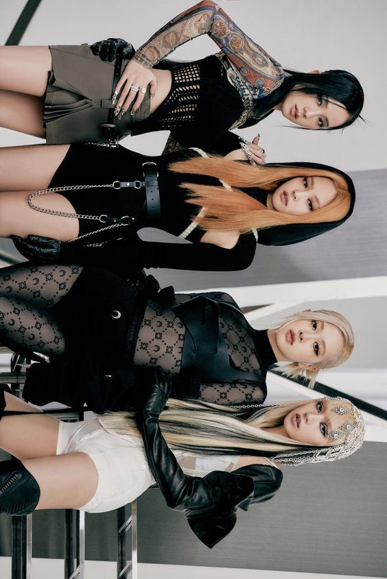

BLΛƆKPINK

Biografía
Es un grupo femenino surcoreano formado por YG Entertainment. Está integrado por cuatro miembros: Jisoo, Jennie, Rosé y Lisa.
Debut
BLACKPINK hizo su debut el 8 de agosto del año 2016, con el lanzamiento de sus canciones "BOOMBAYAH" y "Whistle" de su primer sencillo digital, 'SQUARE ONE'. En tan sólo una hora, el grupo alcanzó el TOP de varios sitios web, y en cuestión de un día, sobrepasó récords, como alcanzar el puesto #1 en iTunes mundialmente, siendo el primer grupo K-Pop en conseguirlo y el segundo grupo femenino tras Fifth Harmony.